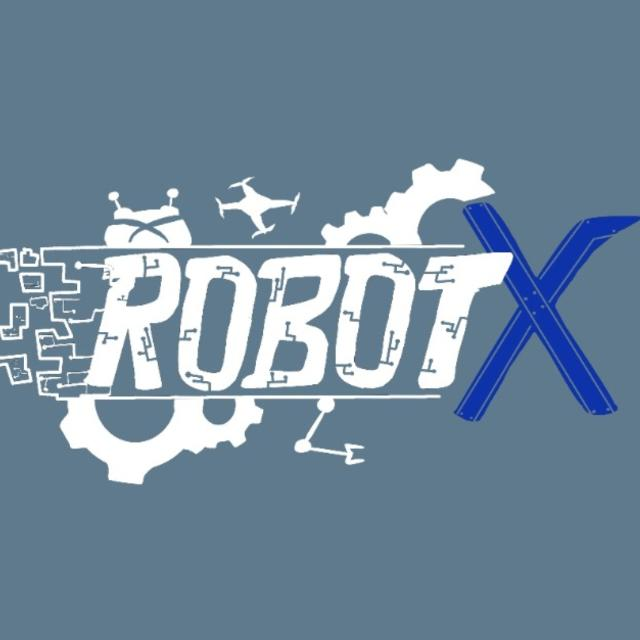
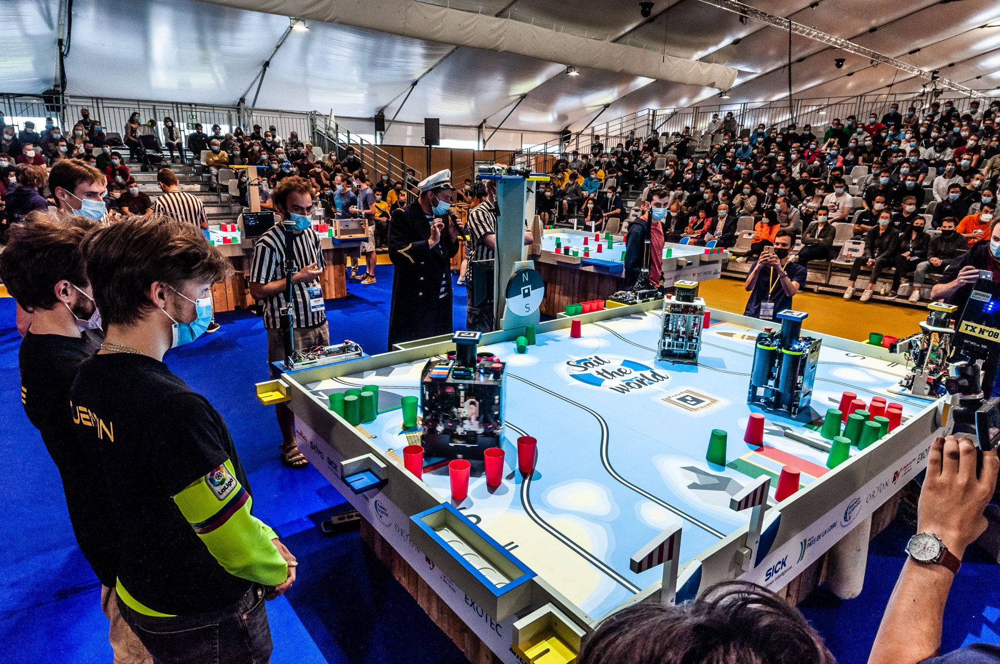
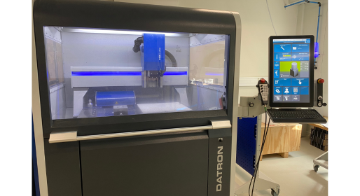
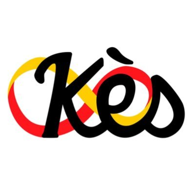

⚙️
Mécanique
Conception CAO, pièces imprimées en 3D, découpe laser et usinage grâce aux machines du X-Fab.
RobotX réunit les élèves de Polytechnique qui aiment concevoir, fabriquer et faire bouger des machines. Notre ambition pour 2027 : représenter l'École Polytechnique à la Coupe de France de robotique.

Un binet ouvert à tous les niveaux : pas besoin d'être expert en électronique ou en mécanique, on se forme entre nous.
Conception CAO, pièces imprimées en 3D, découpe laser et usinage grâce aux machines du X-Fab.
Cartes de commande, capteurs, odométrie, moteurs et alimentation.
Firmware embarqué, ROS, vision par ordinateur, planification de trajectoire et apprentissage.
membres
projets en cours
partenaires clés
année de création
Chaque année, des équipes de toute la France affrontent leurs robots autonomes lors de matchs chronométrés, sur un thème renouvelé à chaque édition. Lors de la prochaine édition, RobotX s'y mesurera aux meilleures équipes de France.

La Kès, BDE de l'X, finance en partie RobotX, et le X-Fab met à notre disposition son espace de prototypage (impression 3D, découpe laser, CNC métal). Rejoignez-les pour porter l'équipe de l'X à la Coupe de France.

